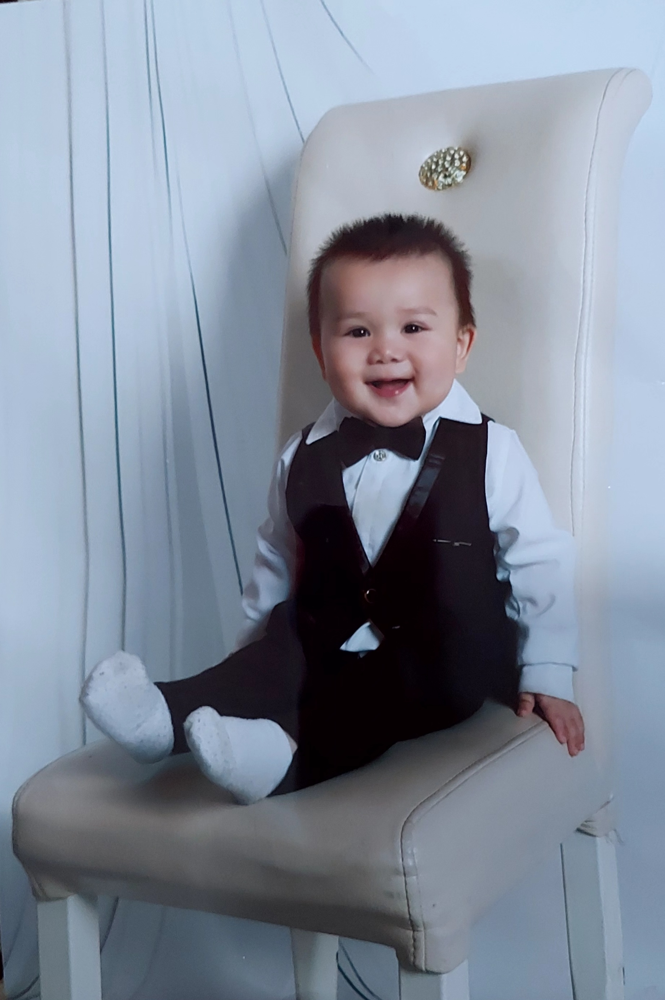

Armin is 2 years old, he was born in 1402,2,2. his date of birth filled with number two 😄
Armin is a lovely and cute boy, once you see Armin you will understand how cute boy he is. 🥰

💛💛💛...ARMIN...💛💛💛
here is a cute video
how was the video? rate star
let's have a short information about children:
children are fascinating and complex individuals with unique characteristics and abilities.
they develop rapidly, particulary in their early years, and their brains produce
a milion neural connections each second. babies can also recognize their mothers through
scent and voice, even before they have devveloped vision.
Fun Fact About Kids:
Rapid Growth: childre grow incredibly fast during their early years, in fact a baby's brains
will double in size during their first year of life.
Natural Artists: Children are often naturally creative and artistic. many famous artists, like piano picasso
started creating art at a very young age.
Laughter Is Universal: Babies are born with the ability to laugh, and it's a Universal behavior,
no matter where they're from, all babies have the capacity to laugh.
Strong Senses: A baby's senses are well-developed from birth.
They can see, hear, smell, taste, and touch, even though these abilities continue to
refine as they grow.
learning Machines: kids are like sponges when it comes to learning, their brains are extremely plastic,
whicih means they can absorb new information and skills rapidly, especially during the early years.
Natural Swimmers: Babies have a natural reflex that allow them to hold their breath
and close their airways when submeerged in water, this reflex usually disappears around six months.